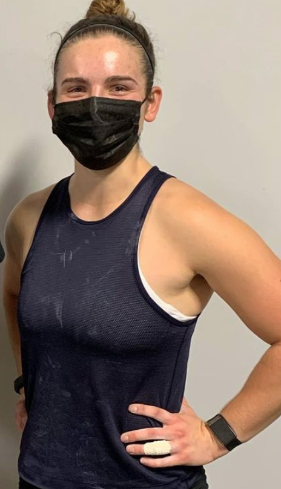

Robert Morris
Head Coach
Robert Morris, affectionately known as Coach Bob, is the head coach and program director for Michigan Weightlifting. Coach Bob has over 40 years of experience in coaching the sport of weightlifting. In 1994, he became assistant coach at the United States Olympic Training Center under Dragomir Cioroslan. When women's weightlifting was introduced in 1997, he worked with Lyn Jones to develop the women's program. From 2002 to 2008, he was the women's head coach at the Olympic Training Center. With Michigan Weightlifting, he strives to uphold a training environment and culture that resembles that of the OTC.
David Sawyers
Assistant Coach
David Sawyers, known as Dave to everyone on the team, is the founder and assistant coach of Michigan Weightlifting. Dave was first introduced to the sport of weightlifting after his military service overseas. His first mentor in the sport was Donny Shankle. Over the years, he has gone on to become a national level athlete in the 102kg weight class.

Hannah Swirple
Assistant Coach
I competed for the University of Michigan Weightlifting team for three years under Coach Robert "Bob" Morris after finding Olympic weightlifting between my freshman and sophomore year of college. My time on the team was transformative to my entire undergraduate experience -- the team gave me an outlet to channel my competitive energy, structure in my day-to-day schedule, and, most importantly, teammates to train with. When my three years on the team were up, I was lucky enough to have the opportunity to return as an assistant coach. I am currently helping new recruits learn the fundamentals of Olympic weightlifting as well as learning the art & science of coaching under Coach Bob. A fun fact about me: half of my knee is permanently numb due to a reconstructive surgery where my surgeon snipped a nerve :)
Relevant certifications:
USA Weightlifting (USAW) Level 1 Coach
Certified Strength & Conditioning Specialist (CSCS)
CPR/AED (American Red Cross)
Michigan Sport-Related Concussion Training Certification (Michigan Concussion Center and Michigan NeuroSport)
BS Movement Science, University of Michigan